10. 自然変換
7章と8章で、関手が圏同士の対応であることを見ました。関手には List、Option、Writer、Reader などがあり、2つの圏の間には複数の関手が存在することを学びました。複数の関手が存在するとき、それらの等しさはどのように扱われるでしょうか？
ここでは、複数の関手の同等性について議論するために、自然変換を導入します。自然変換は、関手の性質を維持しながら関手間を対応させるものです。
本章ではまず、自然変換のイメージを掴むために、List 関手から Option 関手への自然変換など、具体例を見ていきます。
次に、自然変換の定義を与え、その定義と具体例とを照らし合わせます。
関手の変換である自然変換を導入すると、関手を対象として自然変換を射とするような圏を考えることができます。そのような圏は関手圏と呼ばれます。関手圏を導入するために、自然変換の合成、合成の結合律、単位律について議論します。
目次
10.1 自然変換とは
10.1.1 自然変換の例
まずは自然変換の具体例を見ていきましょう。
自然変換は関手間の変換なので、List 関手と Option 関手を変換させてみます。
List 関手から Option 関手への自然変換の例として、 headOption、listToNone などがあります。
def headOption[A]: List[A] => Option[A] = _.headOption
def listToNone[A](list: List[A]): Option[A] = None
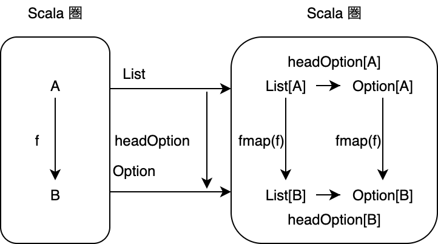
Option 関手から List 関手への自然変換の例としては toList、optionToNil などがあります。
def toList[A]: Option[A] => List[A] = {
case Some(a) => List(a)
case None => Nil
}
def optionToNil[A](option: Option[A]): List[A] = Nil
また、関手の合成もまた関手になるので、List[List] 関手や List[Option] 関手から List 関手への自然変換も考えることができます。
def flattenListList[A]: List[List[A]] => List[A] = _.flatten
def flattenListOption[A]: List[Option[A]] => List[A] = _.flatten
List 関手から Const 関手 (定数を保持する関手) への関数 length もまた、自然変換です。
import hamcat.data.Const
def length[A]: List[A] => Const[Int, A] = list => Const(list.length)
Const 関手は以下のように実装されています。
/** Const data type */
case class Const[C, +A](v: C)
/** Const functor */
implicit def ConstFunctor[C]: Functor[Const[C, ?]] = new Functor[Const[C, ?]] {
def fmap[A, B](f: A => B): Const[C, A] => Const[C, B] = fa =>
Const(fa.v)
}
以上のように、Scala 圏の自己関手に関する自然変換は、ある型構築子からある型構築子への関数であることがわかります。
10.1.2 自然性
では、自然変換の定義を考えていきましょう。自然変換は関手の構造を保つ必要があるので、対象関数と射関数を変換する必要があります。
圏 C から圏 D への関手を F と G とし、F から G への変換 alpha を考えます。
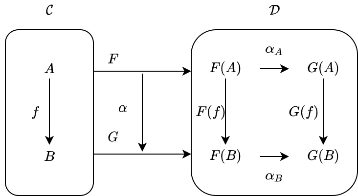
関手の対象関数は、圏 C の対象 A を F[A] および G[A] に対応させるものでした。この2つの対象 F[A] と G[A] は圏 D の対象であるため、対象関数の変換は D の射 alpha[A] として定義されます：
def alpha[A]: F[A] => G[A]
ただし、alpha[A] は特定の対象 A に絞って変換しているので、自然変換 alpha の A 成分と呼ばれます。
次に射関数ですが、これは圏 C の射 f: A => B を圏 D の射 fmapF(f): F[A] => F[B] および fmapG(f): G[A] => G[B] に対応させるものでした。これらの対応は、自然変換の各成分 alpha[A]: F[A] => G[A] と alpha[B]: F[B] => G[B] を用いて以下のように与えられます：
fmapG(f) compose alpha[A]: F[A] => G[B]
alpha[B] compose fmapF(f): F[A] => G[B]
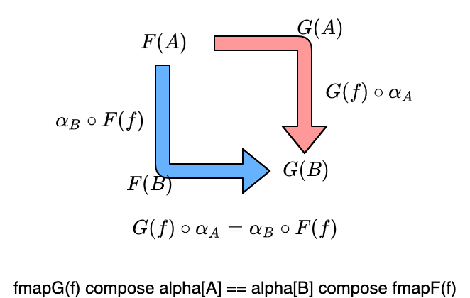
このように、射関数の変換には2通りの作り方があるため、整合性が保たれるようどちらの作り方でも結果が同じでなければいけません：
(fmapG(f) compose alpha[A])(fa) == (alpha[B] compose fmapF(f))(fa)
圏 C の任意の射 f についての上記の条件を、自然性 (naturality condition) と呼びます。
関手間の変換が自然変換であるためには、自然性を満たさなければいけません。
10.1.3 自然変換の定義
一般に、自然変換の定義は、以下のように与えられます：
圏 C から圏 D への関手 F と G に対して、F から G への対応 alpha が自然変換 (natural transformation) であるとは、alpha が以下の条件を満たすことをいいます。
alphaは、圏 C の任意の対象Aに対してalpha[A]: F[A] => G[A]を対応させること。- 圏 C の任意の射
f: A => Bに対してfmapG(f) compose alpha[A]とalpha[B] compose fmapF(f)が等しくなること。
またこのとき、alpha[A] を自然変換 alpha の A 成分といいます。
定義の1つ目の条件は、関手の対象関数の変換です。
定義の2つ目の条件は、関手の射関数の変換に関する条件で、自然性と呼ばれるものです。
10.1.4 自然変換を表す型クラス
自然変換を表す型クラスとして、以下のような FunctionK 型クラスを導入します。この型クラスは、型パラメータとして型構築子 F[_] と G[_] を持ち、抽象メソッドとして F[A] を受け取ったら G[A] を返すような apply メソッドを持ちます。すなわち、関手 F から G への変換を表します。
/** FunctionK: typeclass for mapping between first-order-kinded types */
trait FunctionK[F[_], G[_]] { self =>
/** Apply method */
def apply[A](fa: F[A]): G[A]
}
例によって、この型クラスを実装するだけでは自然変換かどうかはわかりません。そのため、FunctionK は単に型構築子 F[_] から G[_] への関数の一般化となります。FunctionK の実装のうち、自然性を満たすような実装のみが自然変換です。
では先ほどの例から抜粋して、FunctionK のインスタンスを作ってみましょう。
headOption は以下のように定義されますが
def headOption[A]: List[A] => Option[A] = _.headOption
これの FunctionK のインスタンスを実装すると、以下のようになります。
import hamcat.arrow.FunctionK
def headOptionK: FunctionK[List, Option] = new FunctionK[List, Option] {
def apply[A](fa: List[A]): Option[A] = fa.headOption
}
あるいは、以下のようにも実装できます。
object headOptionK extends FunctionK[List, Option] {
def apply[A](fa: List[A]): Option[A] = fa.headOption
}
なお、この定義は kind-projector の Lambda (λ) を使えば少し簡単に書くことができます。
def lambdaHeadOption: FunctionK[List, Option] = Lambda[FunctionK[List, Option]](_.headOption)
def λHeadOption: FunctionK[List, Option] = λ[FunctionK[List, Option]](_.headOption)
また、FunctionK のエイリアスとして ~> が使われることが多いです。
/** Alias for FunctionK */
type ~>[F[_], G[_]] = FunctionK[F, G]
したがって、headOption は、以下のようにも書けます。
def headOptionK2: (List ~> Option) = Lambda[List ~> Option](_.headOption)
10.1.4 自然変換の例は、自然性を満たすか
自然変換の具体例と定義を見ましたので、具体例が実際に自然変換の定義を満たすかどうかについて考えていきます。
headOption: List => Option
headOption 関数は、List 関手から Option 関手への自然変換です。
実際、List(1, 2, 3, 4, 5) と isEven 関数に対して、自然性を満たします：
import hamcat.Implicits._
def isEven: Int => Boolean = _ % 2 == 0
val list = List(1, 2, 3, 4, 5)
// list: List[Int] = List(1, 2, 3, 4, 5)
// 自然性
val listToOption1 = (OptionFunctor.fmap(isEven) compose headOptionK[Int])(list)
// listToOption1: Option[Boolean] = Some(value = false)
val listToOption2 = (headOptionK[Boolean] _ compose ListFunctor.fmap(isEven))(list)
// listToOption2: Option[Boolean] = Some(value = false)
listToOption1 == listToOption2
// res0: Boolean = true
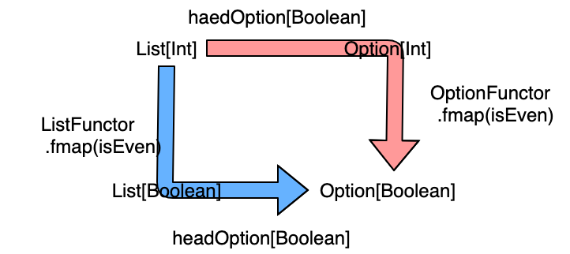
length: List => Const
length 関数は、List 関手から Const 関手への自然変換です：
def length[A]: List[A] => Const[Int, A] = list => Const(list.length)
def lengthK = Lambda[FunctionK[List, Const[Int, ?]]](fa => Const(fa.length))
length もまた、List(1, 2, 3, 4, 5) と isEven 関数に対して、自然性を満たします：
// 自然性
val listToConst1 = (ConstFunctor.fmap(isEven) compose lengthK[Int])(list)
// listToConst1: Const[Int, Boolean] = Const(v = 5)
val listToConst2 = (lengthK[Boolean] _ compose ListFunctor.fmap(isEven))(list)
// listToConst2: Const[Int, Boolean] = Const(v = 5)
listToConst1 == listToConst2
// res1: Boolean = true
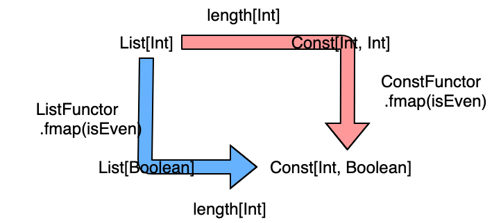
flattenListOption: List[Option] => List
flattenListOption 関数は、List[Option] 関手から List 関手への自然変換です：
def flattenListOption[A]: List[Option[A]] => List[A] = _.flatten
type ListOption[A] = List[Option[A]]
def flattenListOptionK = new FunctionK[ListOption, List] {
def apply[A](fa: List[Option[A]]): List[A] = fa.flatten
}
List(Some(1), Some(2), None, Some(3)) と isEven 関数に対して、自然性を満たします：
val listOption = List(Some(1), Some(2), None, Some(3))
// listOption: List[Option[Int]] = List(
// Some(value = 1),
// Some(value = 2),
// None,
// Some(value = 3)
// )
def fmapLO[A, B]: (A => B) => List[Option[A]] => List[Option[B]] = f => listA =>
listA.fmap(_.fmap(f))
// 自然性
val listOptionToList1 = (ListFunctor.fmap(isEven) compose flattenListOptionK[Int])(listOption)
// listOptionToList1: List[Boolean] = List(false, true, false)
val listOptionToList2 = (flattenListOptionK[Boolean] _ compose fmapLO(isEven))(listOption)
// listOptionToList2: List[Boolean] = List(false, true, false)
listOptionToList1 == listOptionToList2
// res2: Boolean = true
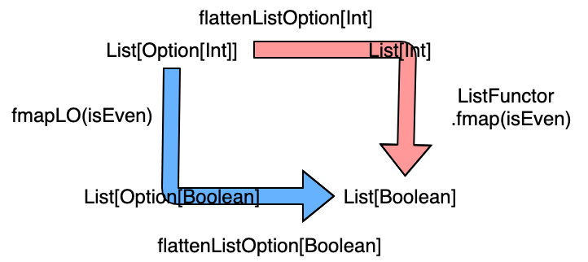
10.2 関手圏
自然変換は関手間の対応であるので、関手を対象として自然変換を射とするような圏を考えることができます。そのような圏は関手圏と呼ばれます。
一般に、（小さい）圏 C から（局所的に小さい）圏 D への関手を対象とし、その間の自然変換を射とする圏を圏 C から圏 D への関手圏 (functor category) と呼び、Fun(C, D) と書きます。
また、圏 C から圏 D への反変関手を対象とし、その間の自然変換を射とする圏は Fun(oppC, D) と書きます。
関手圏は、圏の圏についての Hom 集合 (圏の圏の射は関手であり、Hom 集合はその圏における全ての射の集まりです) に自然変換を与えたものです。
のちに、米田埋め込みによって任意の圏を関手圏に埋め込める (表現できる) ことを学びます。
10.2.1 自然変換の合成
関手圏が圏であるためには、射の合成と結合律、単位律が定義されている必要があります。まずは射の合成、すなわち自然変換の合成について考えてみましょう。
自然変換は単に自然性を満たす射であるので、自然変換を合成するには自然性を満たすように射を合成すれば良さそうです。
圏 C から圏 D への3つの関手を F と G、H とし、F から G への自然変換を alpha、G から H への自然変換を beta としましょう。
このとき、圏 C の対象 A に対して、各自然変換の A 成分は以下のようになるはずです。
alpha[A]: F[A] -> G[A]
beta[A]: G[A] -> H[A]
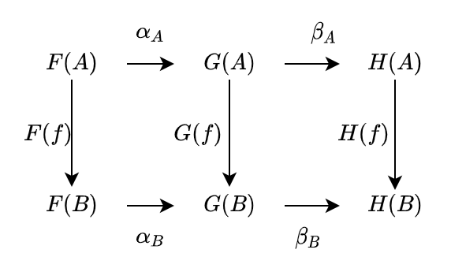
これらは圏 D の射であるので、合成することができます。
beta[A] compose alpha[A]: F[A] -> H[A]
そして、この射の合成を自然変換の A 成分に関する合成として以下のように定義します。
(beta compose alpha)[A] := beta[A] compose alpha[A]
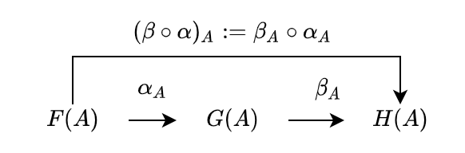
この合成 beta compose alpha は自然性を満たすでしょうか？
満たされるべき自然性は
fmapH compose (beta compose alpha)[A] == (beta compose alpha)[B] compose fmapF
です。
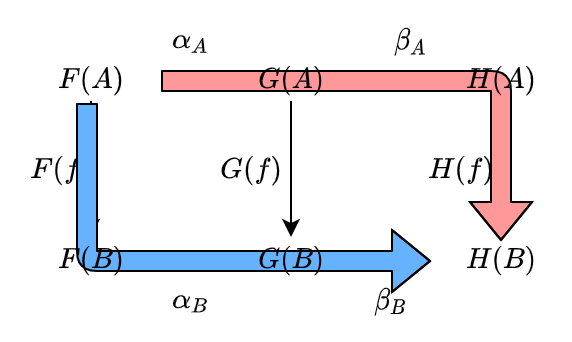
まず、alpha と beta は自然変換であるので、以下の2つが成り立ちます：
1) fmapG compose alpha[A] == alpha[B] compose fmapF
2) fmapH compose beta[A] == beta[B] compose fmapG
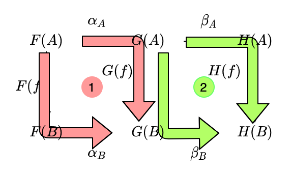
射の合成により、1) の両辺に beta[B] を適用することができます：
3) beta[B] compose fmapG compose alpha[A] == beta[B] compose alpha[B] compose fmapF
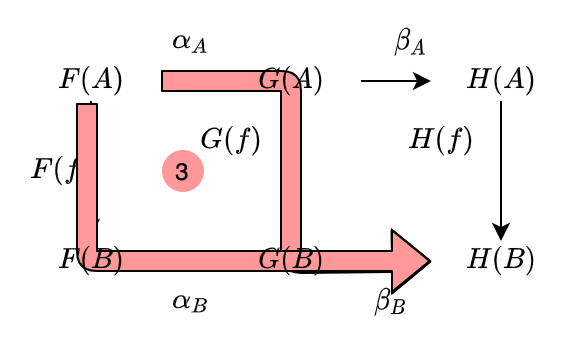
2) と 3) より、以下が成り立ちます：
4) fmapH compose beta[A] compose alpha[A] == beta[B] compose alpha[B] compose fmapF
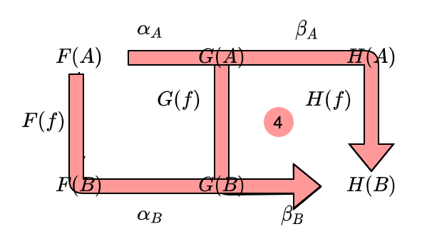
射の合成は結合律を満たすので、以下のように書け：
fmapH compose (beta[A] compose alpha[A]) == (beta[B] compose alpha[B]) compose fmapF
自然変換の各成分の合成の定義により、求めたい自然性が導かれます：
fmapH compose (beta compose alpha)[A] == (beta compose alpha)[B] compose fmapF
したがって、自然変換の合成は単にその射の合成であると言えます。
また、自然変換の合成は射の合成であるので、合成に関して結合律が成り立ちます。
10.2.2 FunctionK の合成
FunctionK に関する合成は、単に射の合成をするだけなので以下のように定義できます：
/** Composition of natural transformation */
def andThen[H[_]](v: FunctionK[G, H]): FunctionK[F, H] =
new FunctionK[F, H] {
def apply[A](fa: F[A]): H[A] = v(self(fa))
}
/** Composition of natural transformation */
def compose[H[_]](v: FunctionK[H, F]): FunctionK[H, G] =
v andThen self
例えば、flattenK: ListList ~> List と headOptionK: List ~> Option とを合成することができます。
type ListList[A] = List[List[A]]
def flattenK: ListList ~> List = Lambda[ListList ~> List](_.flatten)
def flattenThenHeadOption = headOptionK compose flattenK
flattenThenHeadOption(List(List(1, 2, 3), List(4, 5), Nil, List(6)))
// res3: Option[Int] = Some(value = 1)
10.2.3 関手圏は単位律を満たすか
関手圏における恒等射について考えていきましょう。
恒等射 identityK は、関手の対象関数 F[_] を F[_] ⇒ F[_] に対応させ、この変換が自然性を満たすことを見ればよさそうです。
実際、この対応は自然性を満たします：
fmapF(f) compose identityK[A] == identityK[B] compose fmapF(f)
Scala においては、FunctionK.identityK として実装できます。
object FunctionK {
def identityK[F[_]]: FunctionK[F, F] = new FunctionK[F, F] {
def apply[A](fa: F[A]): F[A] = fa
}
}
FunctionK.identityK は、恒等射の性質 f . idA = idB . f を満たします。
import hamcat.arrow.FunctionK.identityK
(headOptionK compose identityK[List])(List(1, 2, 3)) == headOptionK(List(1, 2, 3))
// res4: Boolean = true
(identityK[Option] compose headOptionK)(List(1, 2, 3)) == headOptionK(List(1, 2, 3))
// res5: Boolean = true
おまけ: 先取り！モナド
実は、関手と自然変換さえ学べば、モナドの定義を読むことができます。
実際にモナドを使うのはだいぶ後になりますが、ここでモナドの定義をサクッと読んでみましょう！
モナドの定義
モナドは、以下のように定義されます：
圏 C 上のモナドとは、自己関手 T[_]、自然変換 eta: Id ~> T と mu: T[T] ~> T の三つ組 <T, eta, mu> であって、以下が成り立つもののことです。
mu[A] compose T[eta[A]] == identity[T[A]]mu[A] compose eta[T[A]] == identity[T[A]]mu[A] compose mu[T[A]] == mu[A] compose T[mu[A]]
この3つの条件をモナドの公理と呼びます。
何言ってるかわからねーと思うので、Option モナドについて考えてみましょう。
Option モナドをみてみよう
Scala 圏における Option モナドは、自己関手 Option[_]、自然変換 eta: Id ~> Option、mu: Option[Option] ~> Option の三つ組です。eta と mu はそれぞれ Option.apply メソッドおよび flatten メソッドとします。つまり、eta が T で型を包む操作で、mu が T のネストを平滑化する操作です。
type Id[A] = A
type OptionOption[A] = Option[Option[A]]
object eta extends (Id ~> Option) { def apply[A](fa: Id[A]): Option[A] = Option(fa) }
object mu extends (OptionOption ~> Option) { def apply[A](fa: Option[Option[A]]): Option[A] = fa.flatten }
これらがモナドの公理を満たすか確認してみます。
まず1つ目。
mu[A] compose T[eta[A]] == identity[T[A]]
import hamcat.data.identity
(mu[Int] _ compose OptionFunctor.fmap(eta[Int]))(Option(3)) == identity[Option[Int]](Option(3))
// res6: Boolean = true
T[A] を T[T[A]] にしたあと flatten すると T[A] になる、という条件みたいですね。
次に2つ目。
mu[A] compose eta[T[A]] == identity[T[A]]
(mu[Int] _ compose eta[Option[Int]])(Option(3)) == identity[Option[Int]](Option(3))
// res7: Boolean = true
これも T[A] ~> T[T[A]] ~> T[A] についての条件ですね。結合律みたいなもんでしょうか。
最後に3つ目。
mu[A] compose mu[T[A]] == mu[A] compose T[mu[A]]
(mu[Int] _ compose mu[Option[Int]])(Option(Option(Option(3)))) == (mu[Int] _ compose OptionFunctor.fmap(mu[Int]))(Option(Option(Option(3))))
// res8: Boolean = true
これは、どれだけネストされても平滑化できるという条件ですね。
Option はモナドの公理を満たすので、モナドであると言えます！
モナドの型クラスを作る
さて、モナドは関手に加えて、平滑化のメソッドを備えたものであることがわかりました。モナドの型クラス Monad は、以下のように実装できます。自己関手 T に対して、平滑化の自然変換 mu を抽象メソッド flatten にし、自然変換 eta を抽象メソッド pure としています。
trait Monad[T[_]] {
def flatten[A](tta: T[T[A]]): T[A]
def pure[A](a: A): T[A]
}
なお、flatten があると flatMap メソッドを作ることができます。
def flatMap[A, B](f: A => T[B])(ta: T[A])(implicit functor: Functor[T]): T[B] =
flatten(ta.fmap(f))
逆に、flatMap から flatten を作ることもできます。
def flatten[A](tta: T[T[A]]): T[A] = flatMap(identity[T[A]])(tta)
したがって、Monad 型クラスの抽象メソッド flatMap と pure でも良いです。
trait Monad[T[_]] {
def flatMap[A, B](f: A => T[B])(ta: T[A]): T[B]
def pure[A](a: A): T[A]
}
また、Writer 圏のところで学んだ fish 演算子 >=> と pure でも良いです。
おわり
モナドの定義を見て、型クラスを定義してみました。関手と自然変換がわかれば、モナドを定義することができるのですね。
計算効果をラップするといった実用的な性質については、モナドを学ぶ章に改めて学んでいきましょう。
まとめ
- 自然変換は、圏
Cから圏Dへの2つの関手FとGの間の変換であって、Cの各対象Aに対してF[A] => G[A]を対応させる。- Scala 圏においては、自己関手から自己関手への変換となり、自然変換は Scala 圏における射
F[A] => G[A]になる。 - 例えば、List 関手から Option 関手への自然変換として headOption がある。
- Scala 圏においては、自己関手から自己関手への変換となり、自然変換は Scala 圏における射
- 自然変換
alphaが満たすべき以下の性質を自然性と呼ぶ。(fmapG(f) compose alpha[A])(fa) == (alpha[B] compose fmapF(f))(fa)
- 自然変換は Scala において、型クラス
FunctionKによって表現される。FunctionKが自然変換になるかは実装によるので、厳密にはFunctionKは first-order-kinded 型間の関数を表現している。FunctionK[F, G]はF ~> Gとも書くことができる。こちらの記法の方が直感的である。
- 圏
Cから圏Dへの関手を対象とし、その間の自然変換を射とする圏を圏Cから圏Dへの関手圏と呼び、Fun(C, D)と書く。- 自然変換の合成は、単に射の合成である。
- 自然変換の合成は結合律を満たす。
- 圏
Cから圏Dへの反変関手を対象とし、その間の自然変換を射とする関手圏はFun(C^op, D)と書かれる。- 反変関手間の自然変換は自然性を満たさないが、反自然性？ (opposite naturality condition) は満たす。
- 圏
C上のモナドとは、型の引き上げと平滑化の機能を持つ関手のことを表す。Scala 圏においては、pureメソッドとflattenメソッドによって表現される。